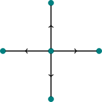
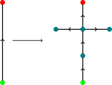

For a better reading experience, consider viewing the PDF.
This is a small project on determining the limiting space of an edge replacement system. Information on edge replacement systems can be found in the paper “Rearrangement Groups of Fractals” by James Belk and Bradley Forrest. Alternatively, there will be a project on edge replacement systems posted on my website in the near future.
The edge replacement of focus is ℛ = (G0,e → R), where G0 and R are given by


The red and green vertices are the initial and terminating vertices respectively. We will get the limiting space of ℛ.
First, we will show that ℛ is expanding, which implies that the gluing relation on the symbol space Ω of ℛ is an equivalence relation. There are three conditions that need to be met, and it is clear that ℛ satisfies them:
To obtain the limiting space of ℛ, we need to know which sequences in Ω are equivlalent. We will do this by looking at the first few elements of the full expansion graph, which has been drawn in Figure 1. Two elements 𝜖0𝜖1𝜖2…, 𝜖0′𝜖1′𝜖2′… ∈ Ω are equivalent if all n ≥ 0, the edges 𝜖0𝜖1𝜖2…𝜖n and 𝜖0′𝜖1′𝜖2′…𝜖n′ share a vertex in Gn. If we look at the centre of each graph in the full expansion sequence, then we see that T∼ L∼ R∼ B. We create new ‘centres’ in each successive graph of the full expansion sequence, hence we can see that
Finally, if we look at the regions of Gn where two edges point to each other, then we see that
The limiting space of ℛ is Ω∕∼. This space is homeomorphic to the Vicsek fractal.